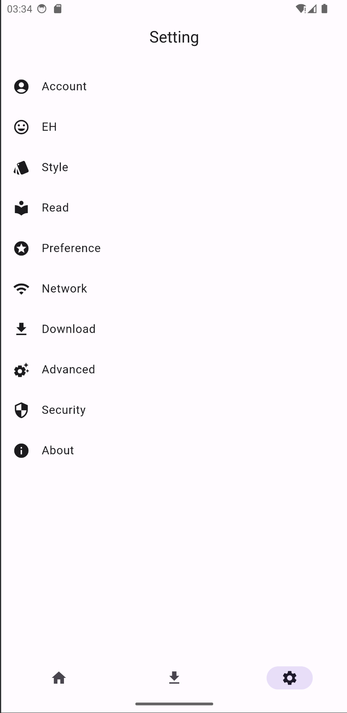
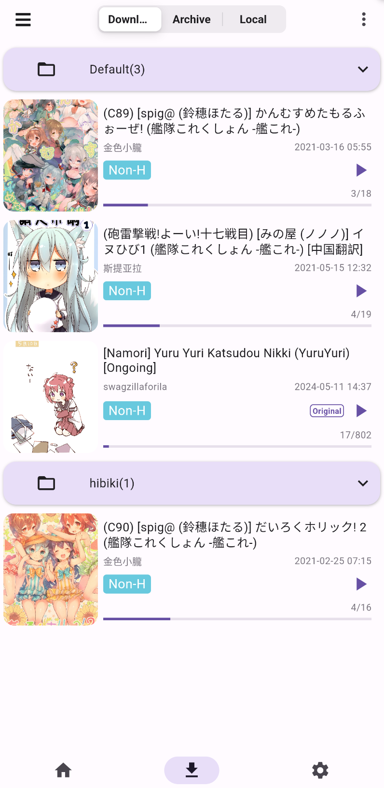

JHenTai 是什么？一篇写给完全不懂 EH 生态的新手入门指南
从零开始认识 JHenTai——E-Hentai/EXHentai 社区的全能浏览下载客户端。不用任何基础，跟着走完五分钟就能跑通第一次画廊浏览和下载。
如果你以前从没听说过 JHenTai，也完全不知道 E-Hentai 是什么，那这篇文章就是专门为你写的。不需要任何前置知识，不需要懂代理配置、不需要会翻墙工具的术语，跟着一步步走完，你就能用起来。
它到底是干嘛的？一个生活化类比
先不说技术术语——把 E-Hentai（简称 EH）想象成一个超大型的社区图书馆：里面堆了海量的漫画、画册、同人作品，全部由社区用户上传，品类丰富到你难以想象。EXHentai 是这个图书馆的"内部分区"，需要认证身份才能进，存放了一些因内容政策被 EH 主馆移除的画廊。
但这个"图书馆"没有官方客户端，也没有好用的官方 App。于是社区里有人做了各种第三方工具，JHenTai 就是其中最受欢迎的一个——它相当于是这个社区图书馆的全能阅读器 + 下载管理器 + 收藏同步助手。
具体来说，它帮你做这些事：
- 在手机或电脑上用一个 App 就能浏览 EH 和 EXHentai 的全部画廊，不用每次都开浏览器
- 把喜欢的画廊一键下载到本地，断网也能看
- 同步你在 EH 论坛的收藏夹和关注列表
- 支持多种登录方式，自动处理 Cookie 和会话
一句话总结：JHenTai 是你进入 E-Hentai 社区的最佳入门工具，想了解更多可以去它的官网看看。
五分钟上手：从下载安装到第一次跑通
好消息是，JHenTai 的安装和第一次使用比你想象的要简单。我把最短路径整理成了四步：
第一步：拿到安装包
安装包从官方下载，根据你的设备选择对应版本——Android 用户直接装 APK，iOS 用户通过 AltStore 或 TrollStore 安装，桌面端支持 Windows、macOS 和 Linux。
安装过程就是标准的 App 安装流程，和装微信、QQ 没什么区别。
第二步：注册 E-Hentai 论坛账号（可选但强烈推荐）
打开 JHenTai 之前，先花三分钟去 E-Hentai 论坛（forums.e-hentai.org）注册一个账号。为什么强烈推荐？因为没登录的访客会受到限制：
- 图片配额很低，看几张就没了
- 不能访问 EXHentai 内部分区
- 不能同步收藏夹
- 不能下载画廊存档包（Archive）
注册过程很简单：填用户名、密码、邮箱，论坛会发一封验证邮件，点进去激活就完事了。
第三步：登录 JHenTai
装好 App 打开后，去设置 → 账户，点"登录"按钮。你会看到三种登录方式：

对于新手，最简单的就是密码登录——直接输入你刚在论坛注册的用户名和密码，App 会自动帮你换取会话 Cookie。登录成功后，设置页面会显示"已登录"，同时你的 EH 收藏夹会自动同步到 App 的收藏页面。
如果密码登录遇到验证码拦截（EH 有时会在登录端点注入验证码），别担心，可以切换到 WebView 登录方式——App 内嵌一个浏览器窗口，你在里面手动过验证码，登录成功后 App 会自动抓取 Cookie。
第四步：第一次浏览和下载
登录成功回到首页，你会看到画廊列表按上传时间倒序排列——这就是 EH 社区最新上传的内容。随便点一张卡片进入画廊详情页，上下滑动就能翻阅所有图片。
想下载？在画廊详情页点下载按钮，默认会把当前画廊的所有图片加入下载队列。下载进度可以在下载管理页实时查看。
完成了——这就是你第一次成功使用 JHenTai。
上手后先玩这三个功能
跑通基本流程后，别急着深入进阶。先把这三个功能摸透，你的 JHenTai 使用体验会上一个台阶。
功能一：切换到 EXHentai 解锁完整内容
默认情况下 JHenTai 连接的是 E-Hentai 主站。但你知道吗，EH 社区还有一个 EXHentai 分区，里面存放了主站因内容政策移除的画廊。要访问它：
- 确保你已经登录（Cookie 里要有
igneous字段） - 进入设置 → EH 设置
- 找到"站点切换"选项，从 E-Hentai 切换到 EXHentai
- 返回首页刷新
你会看到画廊列表重新加载了。这意味着你现在能看到更多、更全的社区内容了。
小提示：EXHentai 和 E-Hentai 的收藏夹、历史记录、下载队列是独立的，图片配额也是分开计算的。如果切换后加载失败或报 403，先检查 Cookie 是否包含
igneous，再确认你的网络能正常访问 exhentai.org。
功能二：调整首页排序，找到你想看的
默认按"上传时间倒序"排，但 JHenTai 首页支持多种排序维度。桌面端在画廊列表顶部的下拉菜单里选，手机端在右上角的筛选按钮中选择：
| 排序方式 | 什么时候用 |
|---|---|
| 上传时间 | 想追最新内容，最常用 |
| 评分 | 想找社区公认的高质量画廊 |
| 种子数 | 优先下载有种子的画廊（配合 Archive Bot） |
| 已观看 | 只看你关注的上传者的新作品 |
| 随机 | 想发现未知内容，摆脱信息茧房 |
排序还能和搜索条件叠加——比如搜索某个作者后，再按评分排序，就能看到这个作者评分最高的作品列表。
功能三：下载管理与 Archive Bot
下载管理页是你一定会频繁打开的地方。这里能看到所有下载任务的实时状态、速度、剩余时间。
如果你只是逐图下载，速度可能不太稳定。JHenTai 支持通过 Archive Bot 下载整个画廊的打包存档——速度更快、更省流量。设置里有多个 Archive Bot 地址可以选，如果某个 Bot 响应慢或超时了，换一个就行。Bot 配置的细节可以在JHenTai文档里查到。

小白的三个常见疑问
Q1：下载任务卡在某一步不动怎么办？
这是新手最常遇到的问题，通常有四种情况：
速度为 0、进度条不动：先检查网络——画廊列表能不能正常刷新？如果整个 App 都无法加载，是网络断了或代理失效。如果用了代理，确认代理服务器在运行。然后试试手动暂停再继续下载，或者把下载并发数从默认 3 降到 1 或 2（EH 可能因为连接过多触发限流）。
暂停图标亮了但我没手动暂停：大概率是"仅 Wi-Fi 下载"选项开了，你当前在移动网络下，App 自动暂停了所有下载。关掉这个选项或切到 Wi-Fi 就行。
下载完了还显示"下载中"：极小概率是数据库写入延迟或 UI 没刷新。下拉刷新一下下载列表，或者完全退出 App 重新打开。实在不行就手动清理这个任务——已下载的图片文件在本地不会丢，重新从本地图库打开画廊就行。
Archive Bot 下载超时：Bot 服务偶尔会下线或响应变慢。去存档 Bot 设置里换一个可用的 Bot 地址，或者暂时切回逐图下载。
Q2：Domain Fronting 选项是什么？要不要开？
在 EH 设置里有一个叫"Domain Fronting"的开关。简单说，打开后 App 会把 EXHentai 的请求通过第三方云服务（比如 AWS CloudFront、Google App Engine）的域名转发，用来绕过某些网络环境对 exhentai.org 的直接封锁。
要不要开？取决于你的网络环境：
- 如果你的网络能正常直连 exhentai.org → 保持关闭，打开只会引入额外延迟
- 如果你的网络无法直接访问 exhentai.org，但能访问大型云服务 → 打开它，这是你访问 EXHentai 的唯一途径
Domain Fronting 本身不是代理或 VPN，它只是一种请求转发技术，服务端再把请求转回 exhentai.org。
Q3：登录后立刻被踢回未登录状态？
如果密码登录成功了，但刷新一下就变成未登录，大概率是 EH 触发了 IP 风控。EH 对异常 IP 会自动重置会话 Cookie。
解决办法：在浏览器里先手动登录论坛确认账号正常，然后用 Cookie 方式或 WebView 方式登录 JHenTai，而不是密码登录。Cookie 登录的好处是你可以自己控制 Cookie 的有效期，不会因为 IP 变化被踢。
下一步：想深入玩可以看什么？
能走到这里，你已经是一个合格的 JHenTai 初级用户了。接下来想深入，可以了解这些方向：
- 标签系统：EH 的标签体系非常完善，学会用标签搜索能精准找到你感兴趣的内容
- 上传者关注：关注你喜欢的画师/上传者，以后他们发新作品会自动出现在你的"已关注"Tab 里
- 本地图库管理：下载多了之后，JHenTai 的本地图库支持按标签、作者、语言筛选和整理
祝你的 EH 探索之旅愉快。开源仓库方面，GitHub、Gitee、GitCode 都有对应的目录，国内访问 Gitee 可能会更快一些。